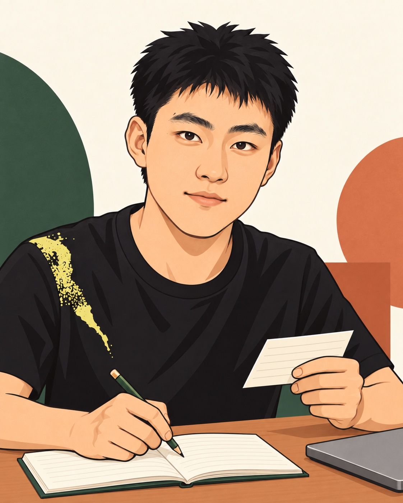
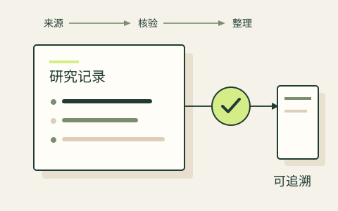
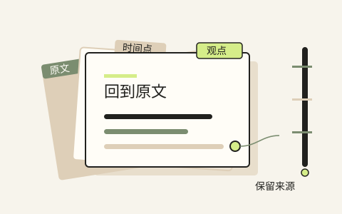
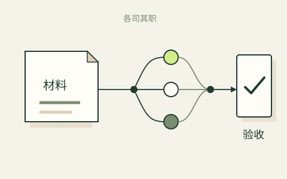

已有说法，需要整理证据
带上主张、来源链接与原文摘录。用循据保留支持、反证和缺口，导出研究简报。
用循据整理证据 ↗FIELD NOTES / 2026
在商业、AI 与日常问题之间，探索更清晰的判断，也把想法一步步做成可用的工具。
市场营销背景 · AI 应用实践 · 持续学习

从个人实践中提炼公开工具，保留过程、出处与实际边界。
START HERE / PUBLIC TOOLS
没有材料？进入工具后可用内置示例试走流程；生成后下载 Markdown，带走结果。
NEW CASE / 同舟 · AI 协作
把分散的 AI 任务，连成可检查的交付。
从需求定义到产物验收：记录一次真实的多工具协作实践，也把流程设计器开放给你。
公开设计器无需账号 · 本地执行与公开网站分开
一次交付，留下可追溯的检查记录。

把分散的信息整理成可追溯的研究流程。
信息来源分散，输出可能悄悄过期；需要知道每条结论从哪里来、何时失效。
定义来源、时效、失败条件与验收标准，组织 AI 工具按边界实现；2026-09-19 通过 124 项完整性检查。
形成可追溯的研究流程和检查规则。项目用于个人研究，不作为收益表现或交易能力的证明。

让视频里的信息，成为可以回看的材料。
长视频里的观点难以回看，摘录脱离上下文后就失去来源。
设计转写、来源时间戳、归档结构与增量处理规则，并定义抽取格式与检查方式。
形成带来源线索的可回看资料库。重要结论仍回到原始材料核对，避免摘录丢失上下文。

把任务、依赖与验收连起来；公开设计计划，本地执行队列。
查看同舟项目与设计器 ↗工具越多，越容易把“生成了内容”误认为“完成了交付”。
定义任务范围、会员分工与停止条件，借助 AI 工具完成调度器，再核对真实文件与检查记录。
已跑通真实计划、初稿与复核链；公开设计器可导出工作流。执行仍需自己的本地环境，节省比例尚未量化。
THE THINKING BEHIND THE WORK
选择一个项目，沿着问题、行动与结果，了解我具体做了什么。
CASE NOTES
我在西南财经大学与 Audencia 的联合培养项目学习市场营销，关注金融服务、人的需求，以及技术如何进入真实业务。
从客户接待、业务引导和数字化渠道服务中，理解金融产品如何连接人的实际需求。
参与基金申报材料、投标与路演资料、项目台账及尽调材料整理。
参与国际研学项目的物料与场地协调、文化体验活动及涉外服务。
欢迎围绕 AI 工具、信息整理与真实商业问题交流；也关注深圳 / 广州的市场营销、AI 应用与商业分析实习机会。